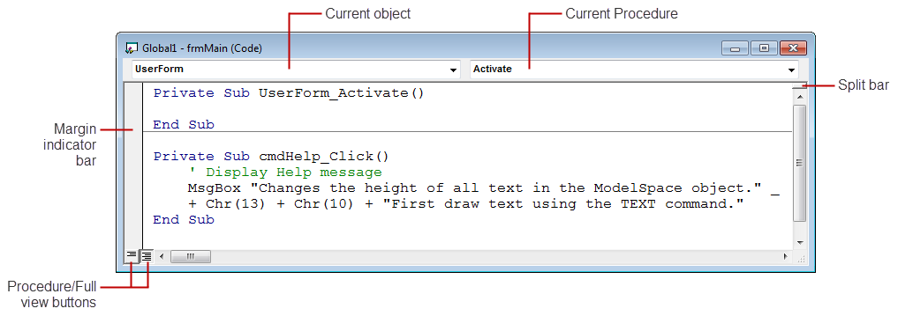

Autodesk AutoCAD 2021: ActiveX Developer's Guide > Getting Started with VBA > About Editing Your Projects with the VBA IDE (VBA/ActiveX) > About Editing Components (VBA/ActiveX) >
The Code window contains two drop-down lists, a split bar, a margin indicator bar, and the Full View and Procedure View icons.
The two drop-down lists at the top of the Code window display the current object and procedure. You can move about your project by changing the object or procedure in these drop-down lists.
The split bar on the right side of the Code window allows you to split the window horizontally. Simply drag this bar down to create another window pane. This feature allows you to view two parts of code simultaneously in the same module. To close the pane, drag the split bar back to its original location.
The margin indicator bar is located down the left side of the Code window. It is used to display margin indicators that are used during code editing and debugging.
The Full View and Procedure View icons are located at the bottom-left corner of the Code window and toggle the display from only one procedure at a time to viewing the entire module at one time.
